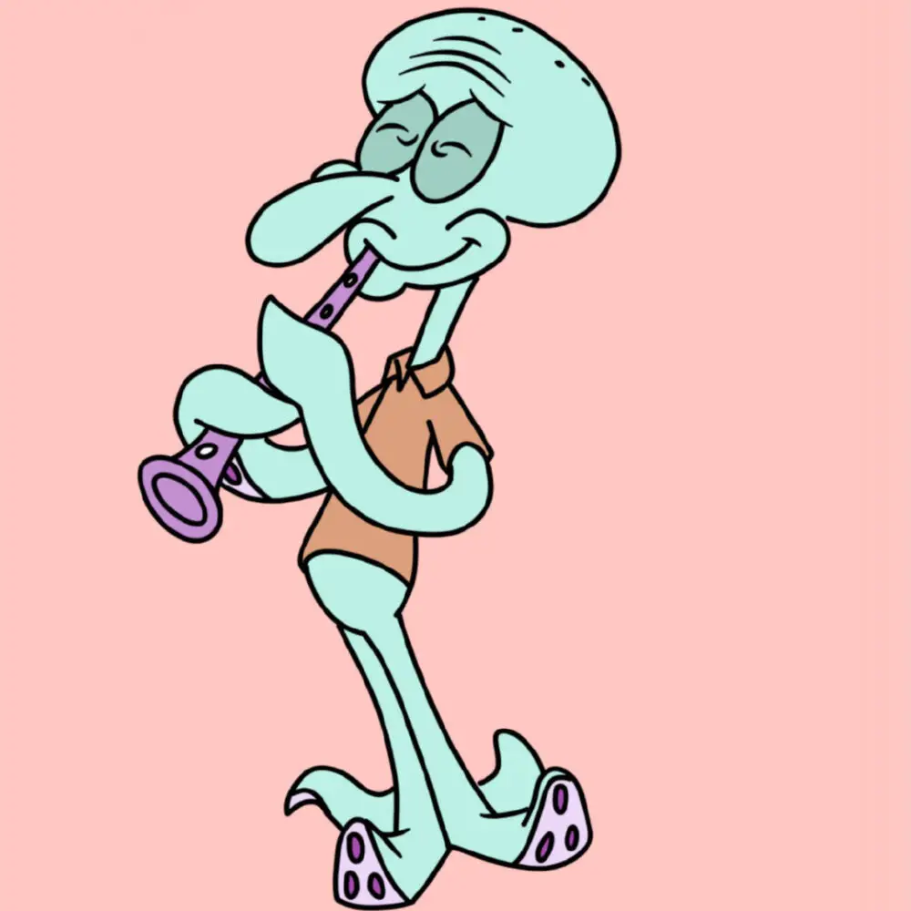

角色介绍
| 海绵宝宝 |

|
海绵宝宝是方块形的黄色海绵，住在比基尼海滩（裤头村、比奇堡）的一个菠萝里，他的宠物是一只会“猫~猫~”叫的海蜗牛小蜗，海绵宝宝喜欢捕捉水母，职业是蟹堡王（The Krusty Krab）里的头号厨师。派大星和珊迪都是他的朋友。海绵宝宝总是能给平静的世界制造麻烦，虽然闹出一些笑话，不过他总能摆脱困境，然后又制造出新的麻烦 |
|
| 派大星 |
粉红色的海星。智商极低，头脑与身体仅使用插头连结。做什么事都会搞砸，但开船却异常厉害，居住在圆顶石头底下。懒惰并相当孩子气，时常在无意间呆滞的流口水，且讨厌洗澡、也不爱洗手、偏爱睡觉。兴趣是看电视。跟海绵宝宝的交情最好；并时常鼓励海绵宝宝做出一些危险行动，往往让彼此陷入困境。 |
||
| 章鱼哥 |  |
大鼻子章鱼，容易愤怒且势利眼，相当自恋，自以为拥有艺术才能。目前是光头，但曾有过黄色长卷发。居住在一栋仿复活节岛人像的房屋。担任"蟹堡王"的柜台人员，但并不喜欢自己的工作，喜欢吹奏竖笛及采用多种风格画自画像。讨厌海绵宝宝和派大星，偶尔会对海绵宝宝表达认同，但通常是对他自己有利的时候。 |
|